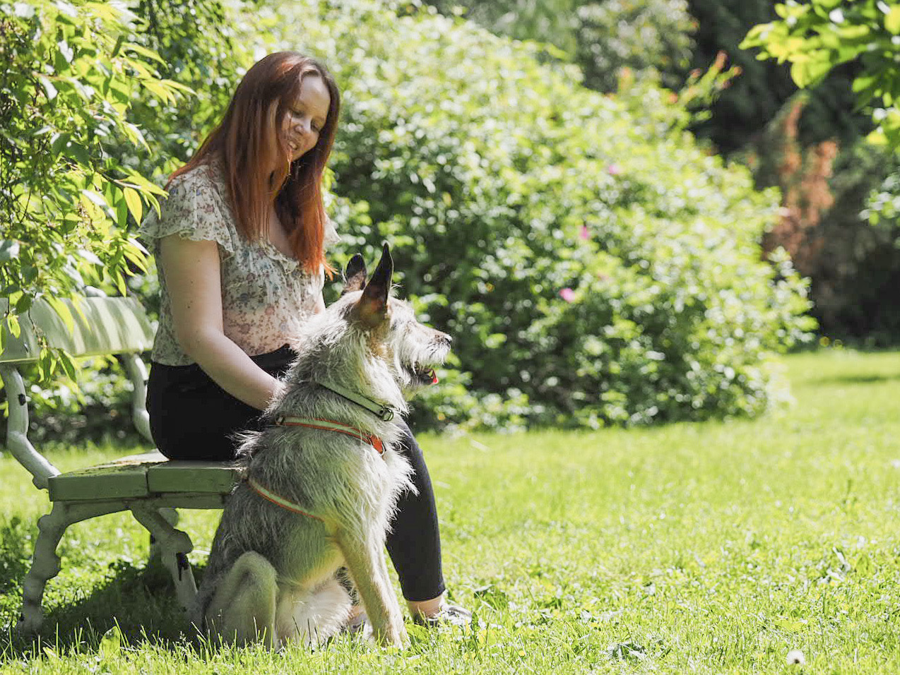

Kuka olen?
Olen Roosamari Nissinen, ensimmäisen vuoden IT-tradenomiopiskelija Haaga-helian ammattikorkeakoulussa. Opinnoissa suunnittelen suuntautuvani ohjelmistokehitykseen. Tulevaisuudessa odotan työllistyväni IT-alan asiantuntijatehtäviin.
Olen myös järjestö- ja nuorisotyön ammattilainen. Ensimmäiseltä koulutukseltani olen Yhteisöpedagogi (AMK). Minulla on laajasti kokemusta kohtaamistyöstä eri ihmisryhmien kanssa. Tulevaisuudessa olen sekä ihmisläheisen työn sekä IT-alan ammattilainen. Toivon työllistyväni alalle, missä pääsen hyödyntämään kaikkea osaamistani.
